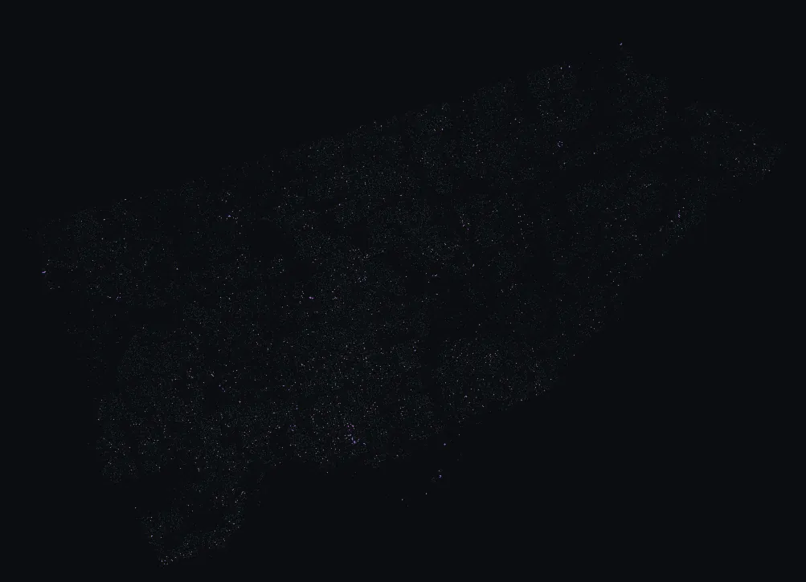

🔍 Lens · 81 different species, 1,207 trees total
Rarities — species with fewer than 50 trees citywide
1,207 trees match this lens — 0.2% of Toronto's catalogued street-tree inventory.

Toronto's planting list has a long tail. After the 100,000 Norway maples and 60,000 honey locusts and the rest of the dominant cohort, there are 81 species each represented by fewer than 50 trees in the entire city. Most are recent ornamental experiments; a few are Carolinian natives at the northern edge of their range. All of them are worth a detour if you're nearby.
Top species in this lens
| Top species in this lens | Trees |
|---|---|
| Hickory Carya | 49 |
| Green Patmore Ash Fraxinus pennsylvanica 'Patmore' | 49 |
| Himalayan Jacquemonti Birch Betula utilis Jacquemonti | 46 |
| Zelkova Halka Zelkova serrata 'Halka' | 45 |
| Large Tooth Aspen Populus grandidentata | 43 |
| Silver Linden Tilia tomentosa | 43 |
Notable specimens
A few of the largest matching trees, with permalinks to view each one on the map.
-
English Elm Ulmus minor 'Atinia'
-
Laurel Willow Salix pentandra
-
Crack Willow Salix fragilis
-
Delaware Elm Ulmus americana 'Delaware'
-
Hickory Carya
-
Silver Poplar Populus alba 'nivea'
-
Large Tooth Aspen Populus grandidentata
-
Silver Pyramidal Maple Acer saccharinum 'Pyramidale'
-
Shagbark Hickory Carya ovata
-
Sassafras Sassafras albidum
-
Pin Cherry Prunus pensylvanica
-
Flowering Almond Prunus triloba
-
Butternut Hybrid Juglans cinerea x
-
Green Patmore Ash Fraxinus pennsylvanica 'Patmore'